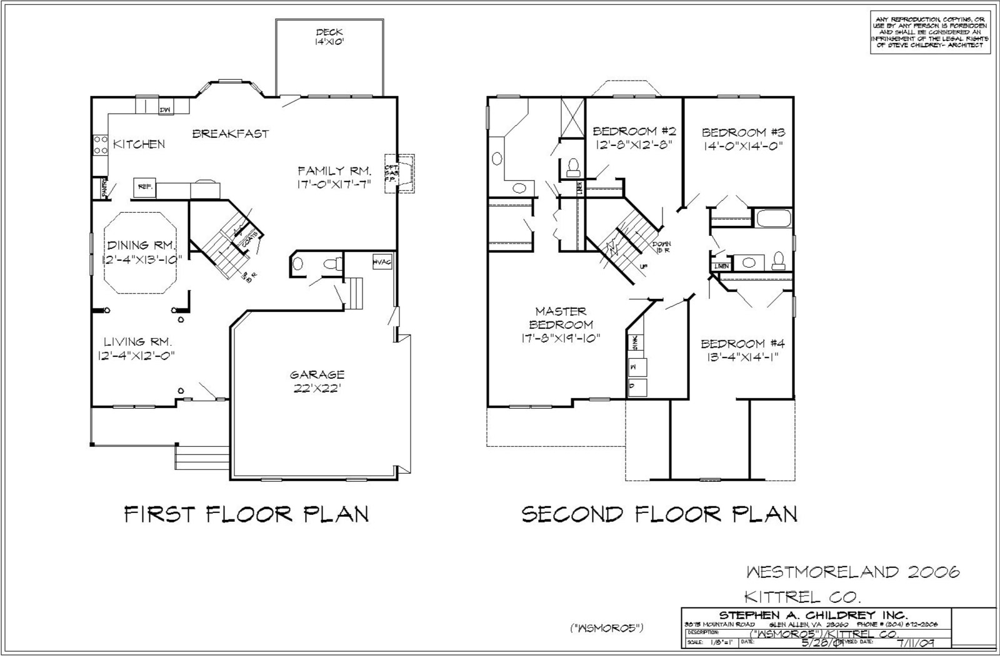
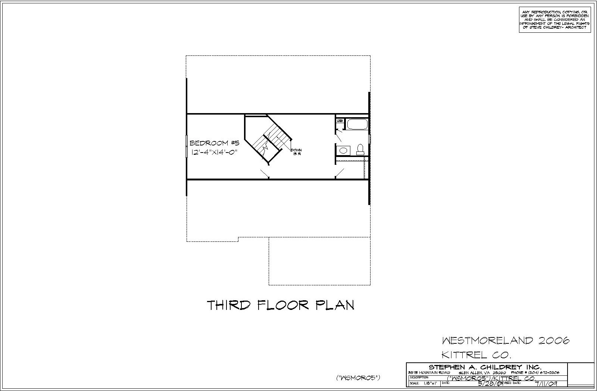

<div class="container project-view">
    
	<div class="row">
        <div class="col-md-8 project-images">
            
            
            
        </div>
        <div class="col-md-4">
            <div class="project-info">
                <h2>Westmoreland I</h2>

                <div class="details">

                    <div class="info-text">
                        <span class="title">Sq. Ft.</span>
                        <span class="val">3,004</span>
                    </div>

                    <div class="info-text">
                        <span class="title">Sq. Ft. (Garage)</span>
                        <span class="val">540</span>
                    </div>
                    <div class="info-text">
                        <span class="title">Sq. Ft (3rd).</span>
                        <span class="val">600</span>
                    </div>

                    <div class="info-text">
                        <span class="title">View PDF*</span>
                        <span class="val"><a href="pdf/plans/11/Winterberry-Westmoreland.pdf" target="blank">Floor 1 and 2 (pdf)</a></span>
                    </div>
               <!--     <div class="info-text">
                        <span class="title">View PDF*</span>
                        <span class="val"><a href="pdf/plans/11/Westmoreland-A-3.pdf" target="blank">Floor 3 (pdf)</a></span>
                    </div> -->
										
										<span class="disclaimer">* Opens in new window</span> 
                </div>

                <p>The Westmoreland offers 4 bedrooms with 2.5 bath, this plan has a great open floorplan with a big kitchen opening into the Family room. The 2nd floor has huge Master Bedroom and big laundry room. The 3rd floor offers an expansion possibility for a great princess suite. </p>

							<p><a href="https://get.adobe.com/reader/" target="adobe"></a></p>
                        
                        
            </div>
        </div>
    </div>
</div>
